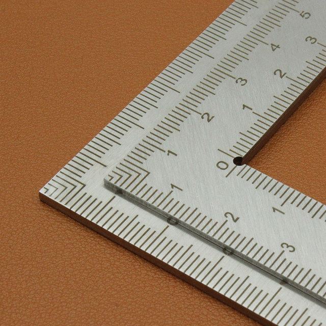
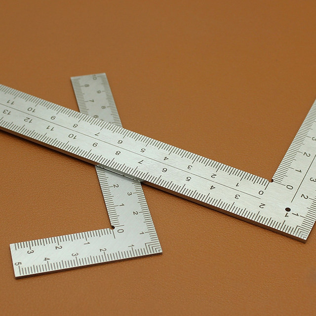
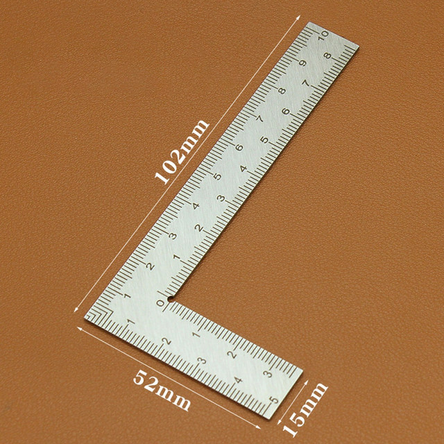
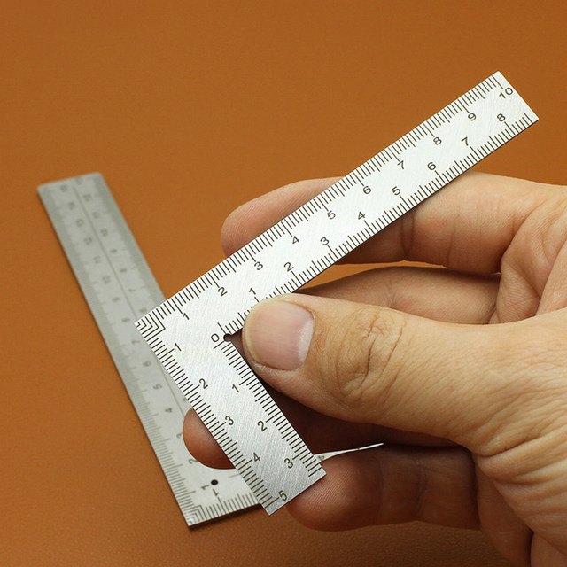
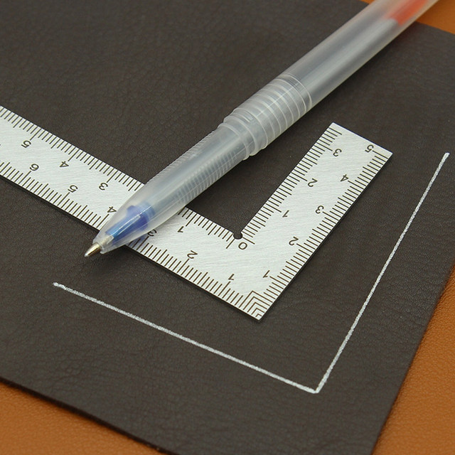
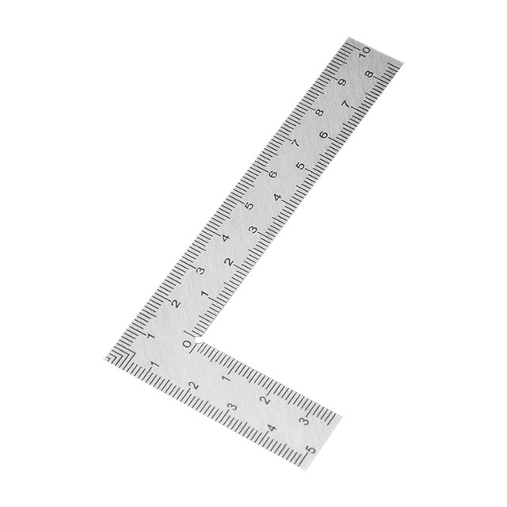

Mini Right Angle Ruler Measuring Layout Tool Stainless Steel Square 90 Turning Ruler Precision For Building Framing Gauges
Feature:
1.Material: The thickened stainless steel plate is forged and is not easy to bend and deform.Sturdy And Durable Against Rusting
2.Easy to Use: Easy to read markings with bright black On silver design
3.Shape: L square ruler with moderate size.It is essential for every carpenter, construction professional and roofer.
4.Applicable: Ideal for carpentry applications in framing, roofing, stair work, in making layouts and patterns.Can also be used as straightedge for determining flatness of a surface.
5.Etching Process: Double-sided scale, long time use without worry about scale wear.
Specification:
Origin: Mainland China
Model Number: L Square Ruler
Material: stainless steel plate
size 1: 5*10cm/1.97*3.94in
Thickness: 1.2mm/0.05in, 2mm/0.08in
Note:
Due to the different monitor and light effect, the actual color of the item might be slightly different from the color showed on the pictures. Thank you!
Please allow 1-2cm measuring deviation due to manual measurement.
1 X L Square Ruler





